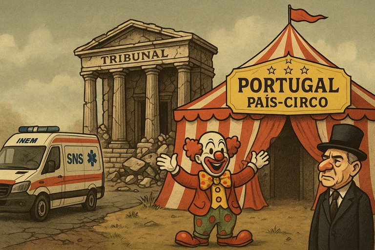

Publicado em 2025-07-07 20:38:23
Portugal já não está apenas em crise.
Está num estado mais profundo, mais silencioso e mais perverso: a agonia encenada.
Como um doente terminal que recita poesia para disfarçar as dores, vivemos a representação de um país que já não funciona — mas faz de conta.
As urgências fecham, os doentes morrem nas macas, os médicos fogem — mas o ministro sorri.
Chamam-lhe “pressão”, “desafios”, “complexidade do sistema”.
O cidadão sofre e o governo diz:
“Estamos a melhorar.”
Melhorar o quê? A arte de negar o colapso?
O Sistema Nacional de Saúde tornou-se o Sistema Nacional de Sofrimento.
E o INEM? Transformou-se no departamento de esperanças quebradas com música de espera.
Quando o INEM falha, chamam a Força Aérea.
Mas só se não estiver nevoeiro, se houver piloto, se houver autorização, se o combustível estiver pago, se o paciente ainda respirar.
O resgate virou lotaria aérea.
Os doentes não são socorridos — são votados ao acaso atmosférico.
José Sócrates continua a arrastar o país pelo labirinto dos recursos,
como um mágico decadente a tirar coelhos mortos de uma cartola jurídica.
Acusado de corrupção, branqueamento e tráfico de influências,
faz do tribunal um palco onde o protagonista é ele — e o povo é o palhaço da plateia.
Cada vez que se apresenta, a justiça adia.
Cada vez que fala, a vergonha cresce.
E cada vez que sorri, morrem mais uns milímetros da nossa dignidade coletiva.
E a tragédia instala-se como comédia.
Os que deviam ser julgados dão entrevistas.
Os que deviam proteger vidas, fazem promessas.
E o país? O país continua a andar — não porque quer, mas porque se habituou.
Portugal está em agonia.
Mas mantém o espetáculo:
com palcos, cartolas e ministros ilusionistas.
Mas que ninguém se iluda:
por detrás das cortinas… o país arde.
Francisco Gonçalves
Cidadão atento no meio do fumo e do riso que encobre a dor.
" O que vivemos agora não é surpresa — é o resultado previsto e ignorado de décadas de mentira, compadrio e anestesia coletiva.
As estrelas avisaram. Os lúcidos gritaram.
Mas o país... preferiu ouvir as novelas e votar nos encantadores de serpentes com gravata.
Agora, toca-se no fundo — mas com música de circo a tocar ao fundo.
O povo paga para ver o espetáculo que o esmaga. E a plateia ainda aplaude quando o palhaço-mor entra com o ar de vítima.
Ainda há quem lute com palavras afiadas, porque a esperança não morre — renasce em cada indignação lúcida."